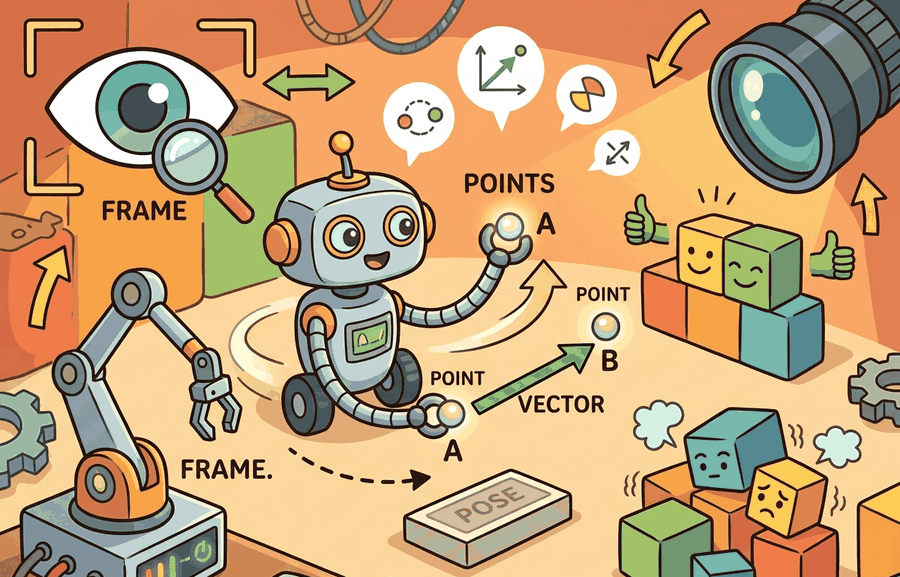

"A robot without frames has many coordinates and no agreement."
A Meticulous Mapping Agent

This section builds on the motivation for coordinate frames introduced in section 4.1. The geometric types defined here (points, vectors, poses, and frames) are the direct input to the rigid transform algebra developed in section 4.4, and the same distinctions recur throughout section 5.5 on forward kinematics and section 6.2 on dynamics, where misclassifying a free vector as a point produces silent numerical errors in joint-torque and contact-force calculations.
A surgical robot reaches for a scalpel, gets its geometry wrong by one misclassified vector, and the arm swings the wrong direction. The array shape was correct. The math compiled. The bug was silent: a surface normal that should transform by rotation alone got a translation added too. Four geometric types sit at the root of every such failure: points (locations), vectors (directions or displacements), poses (where a frame sits and which way it points), and frames (the coordinate systems that give numbers their meaning). Modern embodied AI stacks chain dozens of these frames, from camera sensor to wrist to world. Master the distinctions here and you will read and debug any spatial pipeline with confidence.
Many robotics bugs come from treating all length-three arrays as the same kind of object. A grasp point, a surface normal, a gravity vector, a camera optical axis, and a base position may all fit in a NumPy array. They should not all be transformed the same way. Apply a full SE(3) move to 10,000 surface normals and every single one silently picks up a 0.5 m translation offset; apply only the rotation, and every single one is correct. A typical camera-to-base translation is 0.3 to 0.6 m, so a misclassified normal vector is not nudged by a rounding error but displaced by a distance larger than the object being grasped. Same array shape, same dtype, opposite outcomes.
This section develops the habit of asking two questions for every spatial value: what kind of geometric object is it, and in which frame is it expressed? Figure 4.2A previews the four geometric types on a 2D plane before they are extended to full SE(3) poses.
Translation changes points, but it should not change free vectors. If a normal vector receives a translation offset, a downstream grasp or contact calculation can fail while the array shape still looks correct.
Theory
Figure 4.2B shows this rule visually: a point picks up both rotation and translation, while a free vector picks up rotation only. A rigid pose can be written as $T=(R,t)$, where $R\in SO(3)$ (Special Orthogonal group in 3D, the set of all valid rotation matrices) is a rotation and $t\in R^3$ is a translation. The key distinction is that a point (a location) and a free vector (a displacement) transform differently between frames:
$$p^A = R_{AB}\,p^B + t_{AB}, \qquad v^A = R_{AB}\,v^B.$$
A free vector transforms by rotation only because a displacement has orientation and scale but no absolute location, so this is called the point-versus-vector contract, and the translation $t_{AB}$ must not act on it. In homogeneous form this is enforced by the trailing coordinate: a point is $[\,p^B;\,1\,]$ and a vector is $[\,v^B;\,0\,]$, so
$$\begin{bmatrix} p^A \\ 1 \end{bmatrix} = \begin{bmatrix} R_{AB} & t_{AB} \\ 0\ 0\ 0 & 1 \end{bmatrix} \begin{bmatrix} p^B \\ 1 \end{bmatrix}, \qquad \begin{bmatrix} v^A \\ 0 \end{bmatrix} = \begin{bmatrix} R_{AB} & t_{AB} \\ 0\ 0\ 0 & 1 \end{bmatrix} \begin{bmatrix} v^B \\ 0 \end{bmatrix}.$$
Think of the trailing coordinate as a customs form that every quantity must carry through a border checkpoint. A 1 on the form means "I am a location, please apply both the rotation and the address change." A 0 means "I am a direction, apply the rotation only and leave the address alone." The checkpoint (the 4x4 matrix) does not read the three spatial numbers at all to decide this; it reads only that single digit at the bottom. Get that digit wrong and the wrong rule applies to every number above it, silently, for every single quantity in the batch.
A frame is a named coordinate system attached to something physical or conceptual: world, map, odom, base_link, camera_optical, wrist, object, or contact_patch. A pose gives the origin and axes of one frame relative to another. A number without a frame is a measurement without a ruler: precise, confident, and wrong.
Frames matter in embodied AI because a robot's sensors, joints, and effectors each move independently. A depth camera mounted on a rotating head produces coordinates in its own lens frame. If the controller interprets those coordinates as if they were already in the base frame, the robot reaches toward where the camera was pointing when the robot was still, not where the object actually is. Every link in a kinematic chain introduces a new frame, and correctness depends on tracking which frame each measurement lives in at every moment.
A frame works by defining three orthogonal axes and an origin, then storing all measurements relative to those axes. When a sensor reports a value, that value is only meaningful together with the frame it was measured in. Moving data between frames requires a pose: an explicit record of how one frame's origin and axes sit inside another frame. Compose those poses along a kinematic chain and any quantity can be expressed in any frame without ambiguity.
Students often assume a pose is just a position: a 3D coordinate for location, with orientation stored separately or ignored. In embodied AI, this mistake compounds silently across kinematic chains. A pose is a single element of SE(3). It encodes translation and orientation together. Composing two poses means multiplying their 4x4 homogeneous matrices, not adding position vectors. Separating position from orientation breaks composition: rotating a translated offset then translating again gives a different result than adding two position vectors. A pose answers two questions at once: where is the child frame's origin, and which way does the child frame point? Neither answer is meaningful without the other.
Homogeneous coordinates encode this distinction by giving points a final coordinate of 1 and vectors a final coordinate of 0. Multiplying by a 4 by 4 transform then applies translation to points and not to vectors.
Algorithm: Classify and Transform a Spatial Quantity Between Frames
Input: A spatial array $x \in \mathbb{R}^3$, source frame $F_B$, destination frame $F_A$, pose $T_{AB} = (R_{AB},\, t_{AB})$ with $R_{AB} \in SO(3)$, $t_{AB} \in \mathbb{R}^3$
Output: Correctly transformed quantity $x^A$ expressed in $F_A$
- Inspect the physical meaning of $x$: does it represent an absolute location (point) or a displacement, direction, or axis (free vector)?
- If $x$ is a location, assign homogeneous coordinate $w = 1$; form $\tilde{x}^B = [x;\, 1] \in \mathbb{R}^4$.
- If $x$ is a direction or displacement, assign $w = 0$; form $\tilde{x}^B = [x;\, 0] \in \mathbb{R}^4$. Translation $t_{AB}$ will not act on this quantity.
- Assemble the $4 \times 4$ homogeneous transform $T_{AB}$ with $R_{AB}$ in the upper-left $3 \times 3$ block and $t_{AB}$ in the upper-right column.
- Compute $\tilde{x}^A = T_{AB}\, \tilde{x}^B$.
- Extract the result: $x^A = \tilde{x}^A_{1:3}$. Verify that $\tilde{x}^A_4 = w$ (unchanged); if not, a coding error mixed point and vector paths.
- If the quantity is a pose $T_{BC} \in SE(3)$, compute the composed pose $T_{AC} = T_{AB}\, T_{BC}$ directly; do not decompose into position and orientation separately.
- For a batch of $n$ quantities with mixed types (for example a point cloud with surface normals), partition by $w$ value, apply the appropriate transform to each partition, then merge.
- Check magnitude: $\|x^A\|$ must equal $\|x^B\|$ for free vectors and for points under pure rotation; a nonzero translation term for a direction vector signals a type error.
- Log the result with frame labels, e.g. $x^{F_A}$, so downstream code does not re-apply the same transform.
Worked Example
A gripper approach point and an approach direction are both expressed in the tool frame. The point should rotate and translate into the base frame. The direction should rotate only.
# Points, vectors, poses, frames: keep the section idea tied to observable evidence.
# Run this diagnostic probe before trusting the maintained library path.
import numpy as np
R_base_tool = np.array([[0.0, -1.0, 0.0],
[1.0, 0.0, 0.0],
[0.0, 0.0, 1.0]])
t_base_tool = np.array([0.30, 0.10, 0.50])
p_tool = np.array([0.20, 0.00, 0.00])
v_tool = np.array([1.00, 0.00, 0.00])
p_base = R_base_tool @ p_tool + t_base_tool
v_base = R_base_tool @ v_tool
print("point", np.round(p_base, 3))
print("vector", np.round(v_base, 3))The teaching fragment is about 16 lines. In production, spatialmath.SE3, Pinocchio.SE3, and Drake RigidTransform make poses explicit, while NumPy remains useful for batch point clouds. These tools reduce manual transform code to a few named operations and make type-like intent visible in code reviews.
The distinction matters most at three moments in a typical pipeline: when raw sensor output enters the system (depth images give points; IMU gives vectors; both are plain arrays), when data crosses a subsystem boundary such as a ROS 2 topic or a function call returning a dict, and when a learned model produces spatial outputs that must feed a classical controller. At each of these hand-off points the geometric type is most likely to be forgotten, because the receiving code sees only shape and dtype. Naming the type explicitly at each boundary, either in a docstring, a message field name, or a wrapper class, makes the distinction visible without adding runtime cost.
Builder Recipe
- Name whether the quantity is a point, vector, pose, twist, wrench, or covariance.
- Name the source frame and destination frame before multiplying anything.
- Write one unit test where translation should affect the value and one where it should not.
- Use pose objects or transform messages at subsystem boundaries.
- Log both the frame name and the numerical value.
Adding translation to a normal vector is a quiet bug. It can tilt a grasp score, corrupt a contact normal, or make a controller push in a direction that no longer matches the sensed surface. This failure is most likely when a sensor API returns a plain NumPy array with no type label: depth cameras (RealSense, Azure Kinect) return point clouds and surface normals in the same array shape, and perception pipelines that stack them into a single tensor frequently apply a full SE(3) transform to every row. The result passes all shape and dtype checks while silently rotating and translating directions that should only rotate. The bug typically surfaces downstream as a grasp orientation error or a contact-force direction that is off by the magnitude of the camera-to-base translation.
When using ROS 2 tf2's do_transform_cloud, every field in a sensor_msgs/PointCloud2 message receives the full SE(3) transform, including normal fields (normal_x, normal_y, normal_z). To avoid silently translating normals, strip or split the normal fields before calling do_transform_cloud, apply only the rotation matrix to the normal columns, then reassemble the cloud. Alternatively, use Open3D's transform() on positions and rotate() on normals separately, which makes the geometric type explicit at the call site.
In a bin-picking pipeline, store object centroid as a point in the camera frame, object normal as a vector in the camera frame, grasp pose as a frame relative to the object, and final command pose in the robot base frame. These four objects should have four explicit labels in logs.
If every length-three array looks like a coordinate, the robot is reading a spreadsheet with the column headers removed.
SE(3)-equivariant learning for manipulation (2024-2026). A growing line of work builds neural networks whose outputs transform correctly under rigid-body symmetries, so that rotating the scene rotates the predicted grasp pose without retraining. RoboPoint (Wen et al., 2024, University of Washington) predicts spatial keypoints that respect SE(3) structure, enabling zero-shot transfer across camera viewpoints and robot morphologies. The open challenge is extending equivariance to deformable objects and contact-rich tasks where the symmetry group is only approximately applicable.
Frame-aware large vision-language-action models (2024-2026). Models such as pi0 (Black et al., Physical Intelligence, 2024) and OpenVLA-OFT (Kim et al., Stanford, 2024) output continuous SE(3) pose targets that must be decoded into frame-labeled vectors before an impedance controller can consume them. Cross-embodiment datasets (Open X-Embodiment and DROID, 2024) reveal that roughly 60% of stored trajectories carry inconsistent frame annotations across contributing labs, forcing an explicit normalization pass before fine-tuning. Active research asks how to make frame identity a first-class token in the model's vocabulary rather than a post-hoc fix.
Implicit neural representations with embedded coordinate frames (2024-2026). NeRF and Gaussian-splatting scene representations (e.g., SpacegaussianNeRF, ETH Zurich, 2024) must track not only density and color but also which frame each rendered point belongs to, so that a robot can plan in world coordinates while the scene model updates in camera coordinates. Current systems often conflate the two, producing drift in long-horizon manipulation tasks. Open problem for a PhD student: design a frame-tracking layer for 3D Gaussian splatting that propagates SE(3) uncertainty through the splat parameters, enabling a robot to reason about which parts of its spatial belief are anchored to a fixed world frame versus to a moving object frame, without requiring object segmentation as a prerequisite.
This distinction feeds directly into Section 4.4 on rigid transforms, Section 5.5 on forward kinematics, and Section 6.2 on dynamics.
Given a surface normal, a gripper position, and a wrist pose, can you say which ones should receive translation during a frame change?
Production Pattern
Points, vectors, poses, frames sits inside the Part II robotics contract: geometry defines where things are, kinematics defines what motion is possible, dynamics defines what motion costs, control defines how errors are corrected, and sensing defines what the agent can know on time.
Keep points and vectors separate: translations move points, while directions only rotate. The idea has an intuitive role, a formal interface, a runnable check, and a failure mode that can be reproduced.
For Points, vectors, poses, frames, a pose is a typed relationship between frames, not just a vector. The artifact should record parent frame, child frame, units, timestamp, and multiplication order before any transform is trusted.
| Tool or Library | What It Handles | Verification Check |
|---|---|---|
| SciPy Rotation | converts, composes, applies, and inverts 3D rotations in Python | Verify quaternion order, degrees versus radians, and matrix orthogonality. |
| ROS 2 tf2 | maintains time-buffered coordinate-frame relationships for robot systems | Verify parent-child frame names, lookup time, and transform direction. |
| spatialmath-python | supports practical work on Points, vectors, poses, frames | Verify the library output against the hand-built baseline on one small case. |
| Drake | models dynamical systems, multibody plants, optimization, and controllers | Verify scalar type, plant finalization, frame convention, and solver status. |
| OpenCV calibration | handles camera models, calibration, projection, and vision preprocessing | Verify intrinsics, distortion, image timestamp, and frame-to-camera transform. |
Use this recipe when turning Points, vectors, poses, frames into code, a simulator experiment, or a robot diagnostic. The point is not to use every library. The point is to keep the hand-built baseline and the maintained-tool path comparable.
- Name every frame with a parent, child, unit convention, and timestamp policy.
- Write one hand-checked transform chain and verify identity, inverse, and composition tests.
- Run the same transform through ROS 2 tf2 or SciPy Rotation, then compare one point and one direction vector.
- Record a frame audit with source sensor, latency, and expected sign convention.
- Debug failed behavior by replaying the transform tree before changing policy or controller code.
For Points, vectors, poses, frames, compare methods only through one saved artifact that preserves the inputs, outputs, units, timestamps, latency budget, configuration, seed, metric definition, and failure labels relevant to this section. The comparison is meaningful only when the same script evaluates the same panel.
Extend the section exercise by adding one perturbation specific to Points, vectors, poses, frames and one latency or uncertainty check. Save the result in the EvidenceRecord schema, then explain which library output you trust and why.
A point translates, a vector does not, and a pose carries orientation plus origin. Test those distinctions in a tiny case before passing data through tf2, SciPy Rotation, or a simulator.
Project Ideas
Frame-bug detector (beginner, weekend): Build a Python script that takes a ROS 2 bag file containing a PointCloud2 message with normal fields and checks whether the normals have been incorrectly translated by comparing their magnitudes before and after a recorded tf2 transform; the key challenge is parsing the binary PointCloud2 field layout and separating normal columns from position columns without a robot running. Use ROS 2 rclpy, tf2_ros, and Open3D.
Coordinate-frame visualizer for a simulated arm (intermediate, 1-2 weeks): Write a MuJoCo or PyBullet simulation of a 3-DOF robot arm that draws live axes for every named frame (base, link1, link2, end-effector) and overlays a color-coded arrow for each gripper approach point (red) and approach direction (blue) to make the point-versus-vector distinction visible in real time; the key challenge is computing the per-frame homogeneous transforms from joint angles at each physics step and rendering them without stalling the simulation loop. Use MuJoCo or PyBullet for physics and Matplotlib or MeshCat for visualization.
Section References
Core references for Points, vectors, poses, frames: Modern Robotics; Murray, Li, and Sastry; Siciliano et al.; LaValle; and official documentation for Drake, MuJoCo, Pinocchio, CasADi, python-control, GTSAM, ROS 2, and OpenCV as applicable.
Use these references to check notation, frame conventions, units, solver assumptions, and maintained-library behavior.
Points, vectors, poses, and frames are different contracts. Treating them differently is the first step toward reliable robot geometry.
Create a small test with one point and one vector in the same frame. Apply a transform with nonzero translation, then assert that only the point changes by the translation term.